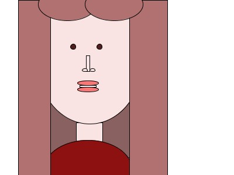

Home
bouncingball2
from
Jessica Graef
on
Vimeo
.
This is my video of my bouncing ball animation that I made in the processing application.

This is my processing portrait that I made in the processing application.
I used a series of ellipses and rectangles to create the shapes.